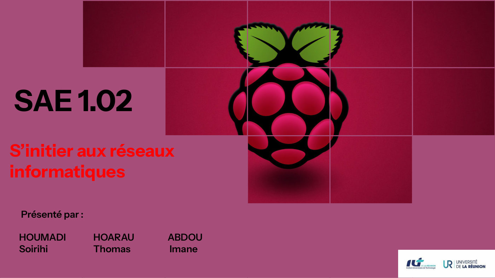
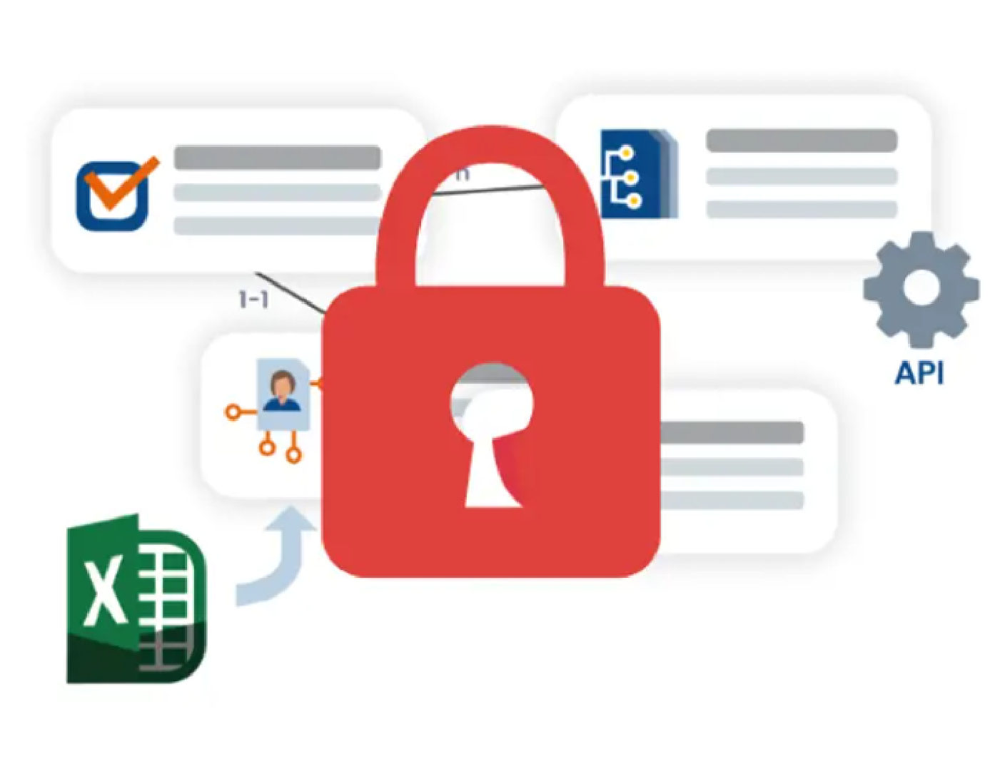
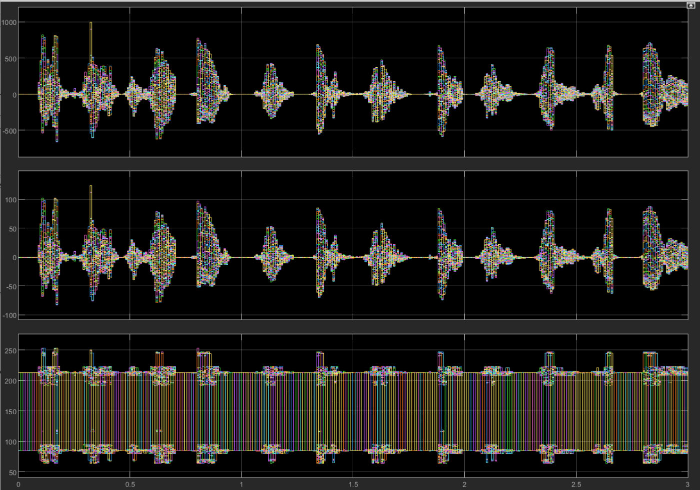
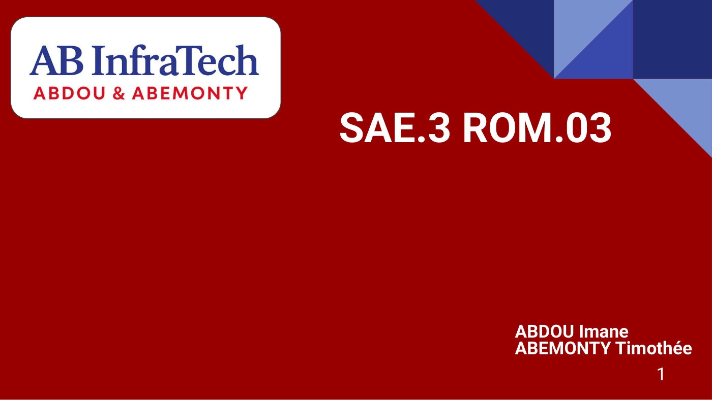
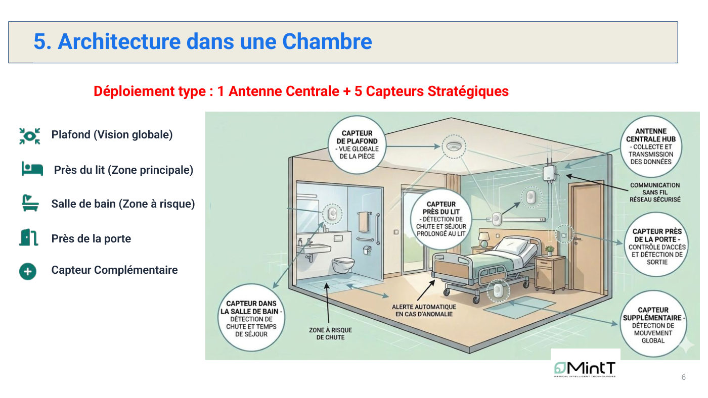

Mes Projets
Mes SAÉ (situations d'apprentissage et d'évaluation) et projets du BUT R&T. Chaque fiche présente le contexte, mon rôle, les travaux réalisés, les résultats et les compétences développées, avec des illustrations extraites des rapports et un accès au document complet.
Se sensibiliser à l'hygiène informatique et à la cybersécurité
Rédaction d'un catalogue de vulnérabilités : ma partie couvre les failles logicielles et les attaques sur le contrôle d'accès.
Voir le projet en détail
Semestre 1S'initier aux réseaux informatiques
Station de mesure IoT sur Raspberry Pi 5 : capteur DHT22, LEDs pilotées en Python, accès SSH à distance et remontée des données via MQTT.
Voir le projet en détail Semestre 1
Semestre 1Découvrir un dispositif de transmission : audit de la couverture Wi-Fi
Audit complet du Wi-Fi du département R&T de l'IUT : cartographie, puissance, SNR, canaux, débit et recommandations chiffrées.
Voir le projet en détail
Semestre 1Traiter des données : chiffrement sous Debian
Chiffrement d'un répertoire avec gocryptfs, d'une partition avec LUKS, puis combinaison des deux, avec montage automatique au démarrage.
Voir le projet en détailSe présenter sur Internet
Réalisation d'un ePortfolio personnel et apprentissage des technologies web HTML/CSS/JS. Vous naviguez dans ce projet !
✓ Vous y êtes déjà ! Semestre 2
Semestre 2Construire un réseau informatique pour une petite structure
Conception sous GNS3 du réseau d'une agence immobilière : 6 VLANs, routage inter-VLAN, pare-feu pfSense et serveurs DHCP, Web et FTP.
Voir le projet en détail
Semestre 2Mesurer et caractériser un signal ou un système
Simulation et mesure sous MATLAB/Simulink d'une chaîne de transmission vocale : modulation FM, codec G.711 et analyse des signaux point par point.
Voir le projet en détailMettre en place une solution informatique pour l'entreprise
Déploiement d'une solution informatique adaptée aux besoins d'une entreprise.
Projet validé · document non joint au portfolioProjet intégratif
Projet multi-blocs intégrant les compétences des trois domaines du BUT R&T.
Projet validé · document non joint au portfolioDévelopper des applications communicantes : Moki
Application web de messagerie pour étudiants (React, Node.js, MongoDB). Mon rôle : cahier des charges, architecture, charte graphique, suivi et rapports.
Voir le projet en détail
Semestre 3Infrastructure réseau et solution multimédia : AB InfraTech
Refonte de l'infrastructure réseau d'une entreprise multisite et déploiement d'une plateforme de formation vidéo (Forma LMS), chiffrage et analyse SWOT.
Voir le projet en détail Semestre 4
Semestre 4Déployer une infrastructure opérateur et ses services clients
Backbone MPLS L3VPN pour trois enseignes (VRF, MP-BGP, OSPF, EIGRP, RIP), évasion Internet centralisée en NAT et tests d'isolation et de résilience.
Voir le projet en détail
Semestre 4Sécurisation des chutes en EHPAD
Étude d'un système de détection de chutes par capteurs connectés : architecture réseau IoT, cybersécurité des données de santé et bilan de déploiement.
Voir le projet en détail Semestre 5
Semestre 5Wi-Fi avancé : configuration et dépannage de réseaux sans fil
Diagnostic et résolution de 5 pannes sur un réseau domestique et un réseau d'entreprise avec contrôleur WLC, sous Cisco Packet Tracer.
Voir le projet en détail